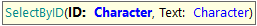
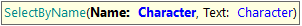
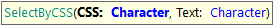
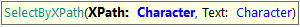

Select commands are used to choose an option from drop-down boxes using the visible Text of the elements. SelectByID Goal: To Select an option using drop-down's ID attribute. Parameters:
Example of use:
&driver.SelectById("Country", "England")
SelectByName Goal: To Select an option using drop-down's 'name' attribute. Parameters:
Example of use:
&driver.SelectByName("City", "London")
SelectByCSS Goal: To Select an option from a drop-down using a CSS selector. Parameters:
Example of use:
&driver.SelectByCSS("#currency", "US Dollars")
SelectByXPath Goal: To Select an option from a drop-down using an XPath selector. Parameters:
Example of use:
&driver.SelectByXPath("
|